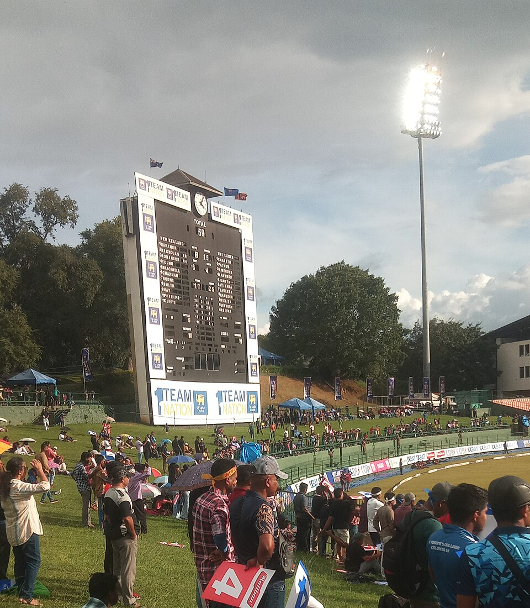

अंतरराष्ट्रीय
अंतरराष्ट्रीयअमेरिका में ट्रंप और नाटो प्रमुख की बैठक, रूस से युद्ध न बढ़ाने की अपील
अमेरिका के फ्लोरिडा में डोनाल्ड ट्रंप और नाटो महासचिव मार्क रुटे ने बैठक की। दोनों नेताओं ने रूस से यूक्रेन संघर्ष को और न बढ़ाने की अपील की है।
ताज़ा ख़बरें
 राष्ट्रीय
राष्ट्रीयपरिसीमन विधेयक पर कार्ति चिदंबरम के संकेत, बदल सकता है डीएमके और एनसीपी-एसपी का रुख
कांग्रेस सांसद कार्ति चिदंबरम ने परिसीमन विधेयक को लेकर डीएमके और एनसीपी-एसपी के रुख में संभावित बदलाव के संकेत दिए हैं। उन्होंने सोशल मीडिया पर पोस्ट कर यह बात कही।
 अंतरराष्ट्रीय
अंतरराष्ट्रीयअमेरिका में भीषण तूफान और बारिश से जनजीवन प्रभावित, 10 लाख लोग अंधेरे में
अमेरिका के मिडवेस्ट और उत्तर-पूर्वी इलाकों में थैंक्सगिविंग के दौरान आए भीषण तूफान और भारी बारिश से लगभग 10 लाख लोग बिजली से वंचित हो गए हैं और सैकड़ों उड़ानें रद्द करनी पड़ी हैं।
अंतरराष्ट्रीयचीन के रेस्टोरेंट में महिला कर्मचारियों के लिए मेकअप अनिवार्य, सैलरी कटने का नियम
चीन की रेस्टोरेंट चेन 'न्यू न्यू सुकीयाकी' में महिला कर्मचारियों के लिए मेकअप करना अनिवार्य करने का मामला सामने आया है। नियम न मानने पर सैलरी काटने की बात कही जा रही है, जिस पर सोशल मीडिया पर बहस छिड़ गई है।
 राष्ट्रीय
राष्ट्रीयशाहरुख खान की आगामी फिल्म किंग का रनटाइम 3 घंटे 17 मिनट तय
बॉलीवुड अभिनेता शाहरुख खान की आने वाली फिल्म किंग का रनटाइम 3 घंटे 17 मिनट होगा। इसके साथ ही यह उनके करियर की लंबी फिल्मों में शामिल हो जाएगी।
 अंतरराष्ट्रीय
अंतरराष्ट्रीयबांग्लादेशी स्पीकर का दावा, 1971 की जंग में भारत ने पाकिस्तान को कमजोर किया था
पाकिस्तान के दौरे पर गए बांग्लादेश के संसद अध्यक्ष हाफिज उद्दीन अहमद ने 1971 के मुक्ति संग्राम को लेकर विवादित बयान दिया है। उन्होंने आरोप लगाया कि भारत ने बंगालियों की मदद करने के बजाय पाकिस्तान को कमजोर करने का प्रयास किया।
राष्ट्रीयहिमाचल प्रदेश की देव परंपरा पर अंतरराष्ट्रीय शोध, बखाण अनुष्ठान में भविष्यवाणियों का अध्ययन
अंतरराष्ट्रीय शोध पत्रिका में हिमाचल प्रदेश के ऊपरी शिमला क्षेत्र की देव परंपरा और बखाण अनुष्ठान पर अध्ययन प्रकाशित हुआ है। इसमें मौसम, महामारी और कृषि से जुड़ी भविष्यवाणियों का जिक्र है।
राष्ट्रीयJEE Main 2027: जनवरी सत्र के आवेदन में सुधार की सुविधा आज से शुरू
नेशनल टेस्टिंग एजेंसी आज से जेईई मेन 2027 जनवरी सत्र के आवेदन पत्र में सुधार की सुविधा शुरू कर रही है। पंजीकृत उम्मीदवार 29 नवंबर तक आधिकारिक वेबसाइट पर जाकर जरूरी बदलाव कर सकते हैं।
राष्ट्रीयउत्तर भारत में शीतलहर और घने कोहरे का प्रकोप, 13 राज्यों में मौसम विभाग का अलर्ट
देशभर में ठंड बढ़ने के साथ ही राजस्थान में शीतलहर और उत्तर भारत के 13 राज्यों में घने कोहरे का अलर्ट जारी किया गया है। वहीं, दक्षिण भारत के कुछ हिस्सों में बारिश की संभावना है।
अंतरराष्ट्रीयसऊदी अरब ने यमन में हूती ठिकानों पर की बमबारी, तेल रिफाइनरी हमले में नेपाली नागरिक की मौत
यमन में सऊदी अरब के फाइटर जेट्स ने हूती विद्रोहियों के ठिकानों पर बमबारी की है। वहीं, सऊदी अरब की एक तेल रिफाइनरी पर हुए हमले में नेपाल के एक कर्मचारी की जान चली गई।
 अंतरराष्ट्रीय
अंतरराष्ट्रीयअमेरिका में थैंक्सगिविंग पर तूफान का कहर, 400 से अधिक उड़ानें रद्द
अमेरिका में थैंक्सगिविंग की छुट्टियों के दौरान आए विनाशकारी तूफान से 400 से ज्यादा उड़ानें रद्द हो गईं और आठ लाख से अधिक घरों में बिजली आपूर्ति ठप हो गई।
राष्ट्रीयउत्तर प्रदेश में बीजेपी ने तेज की चुनावी घेराबंदी, सामाजिक समीकरण साधने में जुटे ब्रजेश पाठक
उत्तर प्रदेश विधानसभा चुनाव 2027 से पहले बीजेपी ने सामाजिक समीकरणों को मजबूत करने के लिए संपर्क अभियान तेज कर दिया है। डिप्टी सीएम ब्रजेश पाठक के नेतृत्व में लखनऊ में दो दिवसीय बैठक आयोजित की गई।
राष्ट्रीयसंसद का विशेष सत्र बुलाए जाने पर कांग्रेस ने जताई आपत्ति
केंद्र सरकार द्वारा संसद का विशेष सत्र बुलाए जाने के फैसले पर कांग्रेस ने तीखी प्रतिक्रिया दी है। पार्टी नेताओं ने इसे संविधान और संसद की गरिमा के खिलाफ बताया है।
 खेल
खेलभारत और न्यूजीलैंड के बीच दूसरा टेस्ट शुरू, टॉस जीतकर गेंदबाजी चुनी
क्राइस्टचर्च के हेगले ओवल मैदान पर खेले जा रहे दूसरे टेस्ट मैच में भारत ने टॉस जीतकर पहले गेंदबाजी का फैसला किया है। तेज गेंदबाज गुरनूर बराड़ इस मैच से अपना टेस्ट डेब्यू कर रहे हैं।
व्यापारताशकंद में आज आयोजित होगा अमर उजाला बिजनेस एक्सीलेंस अवॉर्ड्स
उज्बेकिस्तान की राजधानी ताशकंद में शुक्रवार शाम को अमर उजाला बिजनेस एक्सीलेंस अवॉर्ड्स 2026 का आयोजन किया जाएगा। इसमें देश के विभिन्न शहरों के 23 कारोबारियों और उद्यमियों को सम्मानित किया जाएगा।
राष्ट्रीयअखिलेश यादव ने आजम खान को एयरपोर्ट छोड़ा, यूपी चुनाव से पहले सियासी संकेत
उत्तर प्रदेश विधानसभा चुनाव से पहले समाजवादी पार्टी प्रमुख अखिलेश यादव ने आजम खान को खुद अपनी गाड़ी से एयरपोर्ट पहुंचकर विदा किया, जिसे एक बड़े राजनीतिक संकेत के रूप में देखा जा रहा है।
राष्ट्रीयजाकिर नाइक के संगठन इस्लामिक रिसर्च फाउंडेशन पर कार्रवाई का अधिकार राज्यों को मिला
केंद्र सरकार ने जाकिर नाइक के प्रतिबंधित संगठन इस्लामिक रिसर्च फाउंडेशन के खिलाफ UAPA के तहत फंड और प्रॉपर्टी जब्त करने का अधिकार राज्य सरकारों को दे दिया है।
राष्ट्रीयहैदराबाद में कांग्रेस और BRS कार्यकर्ताओं के बीच झड़प, बिरयानी प्रोटेस्ट के दौरान हंगामा
तेलंगाना के हैदराबाद में कांग्रेस और BRS कार्यकर्ताओं के बीच हिंसक झड़प हो गई। BRS ने सरकारी नौकरियों के वादों को लेकर बिरयानी प्रोटेस्ट रखा था, जिसमें राहुल गांधी का पुतला दहन किया गया। KTR ने इस हमले की कड़ी निंदा की है।
राष्ट्रीयफिरोजाबाद में शादी के दौरान उधारी मांगने पहुंची युवती, हंगामा
उत्तर प्रदेश के फिरोजाबाद में एक शादी समारोह के दौरान गाजियाबाद से पहुंची युवती ने दूल्हे पर उधार दिए रुपये न लौटाने का आरोप लगाते हुए हंगामा किया। पुलिस के हस्तक्षेप के बाद दोनों पक्षों में समझौता हुआ।
राष्ट्रीयहैदराबाद में संविधान दिवस पर कांग्रेस और BRS कार्यकर्ताओं के बीच झड़प
तेलंगाना के हैदराबाद में संविधान दिवस पर कांग्रेस और BRS कार्यकर्ताओं के बीच झड़प हो गई। BRS नेता राहुल गांधी का पुतला रखकर बिरयानी प्रोटेस्ट कर रहे थे।
राष्ट्रीयसंसद सत्र से पहले प्रधानमंत्री नरेंद्र मोदी की अध्यक्षता में आज होगी कैबिनेट बैठक
संसद के आगामी सत्र से पहले प्रधानमंत्री नरेंद्र मोदी की अध्यक्षता में आज दोपहर केंद्रीय कैबिनेट की बैठक होगी। इसमें परिसीमन और महिला विधेयक पर चर्चा की संभावना है।
राष्ट्रीयबिहार: कटिहार में ग्रामीण कार्य विभाग के इंजीनियर के ठिकानों पर विजिलेंस की छापेमारी
बिहार के कटिहार में निगरानी विभाग ने ग्रामीण कार्य विभाग के कार्यपालक अभियंता अजीत कुमार दास के किराए के मकान पर छापेमारी की। जांच के दौरान जमीन के कई डीड और दस्तावेज बरामद हुए हैं।
अंतरराष्ट्रीयहमास की तारीफ के आरोपों पर घिरे जमात प्रमुख, ऑस्ट्रेलिया दौरा बीच में छोड़ा
बांग्लादेशी पार्टी जमात-ए-इस्लामी के प्रमुख शफीकुर रहमान ने हमास नेताओं की प्रशंसा के आरोपों के बीच अपना ऑस्ट्रेलिया दौरा बीच में ही छोड़ दिया है। पार्टी ने इस संबंध में ऑस्ट्रेलियाई अखबार को कानूनी नोटिस भेजा है।
 राष्ट्रीय
राष्ट्रीयचेन्नई के दंपती ने तिरुमाला मंदिर में किया 121 किलोग्राम सोने का दान
चेन्नई के एक दंपती ने तिरुपति स्थित तिरुमाला वेंकटेश्वर मंदिर में 121 किलोग्राम सोना दान किया है, जिसकी बाजार में कीमत करीब ₹206 करोड़ बताई गई है।
राष्ट्रीयझारखंड के गिरिडीह में एक ही परिवार के आठ लोग अचानक बेहोश, धनबाद में भर्ती
झारखंड के गिरिडीह जिले में एक ही परिवार के आठ सदस्यों की अचानक तबीयत बिगड़ गई। चक्कर आने और बेहोशी के बाद सभी को धनबाद के अस्पताल में भर्ती कराया गया है, जहां डॉक्टरों की देखरेख में उनका इलाज जारी है।
राष्ट्रीयसंसद सत्र से पहले मोदी कैबिनेट की बैठक में परिसीमन विधेयक पर हो सकती है चर्चा
संसद के आगामी सत्र से पहले शुक्रवार को होने वाली केंद्रीय मंत्रिमंडल की बैठक में परिसीमन और महिला आरक्षण विधेयक पर चर्चा संभावित है।
अंतरराष्ट्रीयभारत और UAE ने मिलकर नए रक्षा उपकरण बनाने पर सहमति जताई
अबू धाबी में हुई संयुक्त रक्षा सहयोग समिति की 14वीं बैठक में भारत और संयुक्त अरब अमीरात ने मिलकर अगली पीढ़ी के रक्षा उपकरण बनाने और रक्षा क्षेत्र में सहयोग बढ़ाने पर सहमति जताई है।
राष्ट्रीयबंगाली अभिनेत्री मिमी चक्रवर्ती ने की सगाई, सोशल मीडिया पर साझा की तस्वीरें
बंगाली अभिनेत्री मिमी चक्रवर्ती ने एक अंतरंग समारोह में सगाई कर ली है। उन्होंने सोशल मीडिया पर रजिस्ट्री की तस्वीरें साझा की हैं, हालांकि मंगेतर का चेहरा छिपा रखा है।
राष्ट्रीय18 साल से हत्या के मामले में फरार आरोपी यूएई से भारत लाया गया
करीब 18 साल पुराने हत्या मामले में फरार चल रहे आरोपी सुजीत कुमार को इंटरपोल के रेड नोटिस के आधार पर यूएई से गिरफ्तार कर भारत लाया गया है।
 अंतरराष्ट्रीय
अंतरराष्ट्रीयइंटरपोल के 18 देशों में अभियान में 65 गिरफ्तार, दो फर्जी भारतीय पासपोर्ट धारक भी पकड़े गए
इंटरपोल के नेतृत्व में 18 देशों में चलाए गए एक बड़े अभियान के दौरान 65 लोगों को गिरफ्तार किया गया है। इस कार्रवाई में फर्जी भारतीय पासपोर्ट के साथ यात्रा कर रहे दो यात्री भी पकड़े गए हैं।
अंतरराष्ट्रीय26/11 बरसी: अर्जेंटीना ने जताया समर्थन, आतंकवाद के खिलाफ भारत के साथ खड़े हैं
मुंबई आतंकी हमले की बरसी पर अर्जेंटीना के राजदूत मारियानो काउचिनो ने पीड़ितों को श्रद्धांजलि दी। उन्होंने आतंकवाद के खिलाफ भारत के रुख का समर्थन करते हुए वैश्विक चुनौती से निपटने में साथ खड़े होने की बात कही।
राष्ट्रीयआगरा के ताजमहल परिसर में बंदरों का आतंक, पर्यटकों में दहशत का माहौल
ताजमहल परिसर में बंदरों का जमावड़ा बढ़ने से पर्यटकों में चिंता और डर का माहौल है। सोशल मीडिया पर एक वीडियो वायरल हो रहा है जिसमें सैकड़ों बंदरों का झुंड नजर आ रहा है।
राष्ट्रीयहैदराबाद में बीआरएस का 'बिरयानी विरोध', कांग्रेस कार्यकर्ताओं के साथ झड़प
तेलंगाना के हैदराबाद में राहुल गांधी के वादों को लेकर बीआरएस और कांग्रेस कार्यकर्ताओं के बीच झड़प हो गई। बीआरएस नेताओं ने तीन साल पहले के दौरे की बरसी पर अनोखा प्रदर्शन किया।

खेलएशिया कप राइजिंग स्टार्स: सेमीफाइनल में श्रीलंका ने भारत को आठ विकेट से हराया
एशिया कप राइजिंग स्टार्स 2026 के पहले सेमीफाइनल में श्रीलंका ने भारत को आठ विकेट से हरा दिया है। भारत ने पहले बल्लेबाजी करते हुए 317 रन बनाए थे, जिसे श्रीलंका ने आसानी से हासिल कर लिया।
राष्ट्रीयपश्चिम बंगाल: ममता बनर्जी के भाई स्वपन बनर्जी ने अभिषेक बनर्जी के खिलाफ की FIR की मांग
पश्चिम बंगाल की मुख्यमंत्री ममता बनर्जी के भाई स्वपन बनर्जी उर्फ बाबुन ने अपने भतीजे अभिषेक बनर्जी पर धमकाने और रक्तदान शिविर रोकने का आरोप लगाते हुए कोलकाता के कालीघाट थाने में FIR की मांग की है।
राष्ट्रीयसंसद के आगामी सत्र से पहले परिसीमन के मुद्दे पर कांग्रेस ने उठाए सवाल
संसद के आगामी सत्र से पहले कांग्रेस ने शरद पवार और एमके स्टालिन के रुख को लेकर सवाल उठाए हैं। कार्ति चिदंबरम और माणिकम टैगोर के बयानों से राजनीतिक हलकों में चर्चा तेज हो गई है।
अंतरराष्ट्रीयमार्वल स्टूडियोज ने 'अवेंचर्स: डूम्सडे' का नया टीज़र किया जारी
मार्वल स्टूडियोज ने अपनी आगामी फिल्म 'अवेंचर्स: डूम्सडे' का नया टीज़र जारी किया है। इसमें मैगनेटो और डॉक्टर डूम के बीच संभावित संघर्ष की झलक दिखाई गई है।
 खेल
खेलवैभव सूर्यवंशी को प्लेइंग 11 में मौका न मिलने पर भड़के श्रीकांत
भारत के पूर्व कप्तान कृष्णमाचारी श्रीकांत ने युवा बल्लेबाज वैभव सूर्यवंशी को लगातार प्लेइंग 11 में मौका न मिलने पर टीम मैनेजमेंट और हेड कोच गौतम गंभीर की आलोचना की है।
व्यापारदिल्ली सर्राफा बाजार में सोना 1,500 रुपए महंगा, चांदी स्थिर
रुपये में कमजोरी और निचले स्तर पर खरीदारी के चलते दिल्ली सर्राफा बाजार में गुरुवार को सोना 1,500 रुपए बढ़कर 1,27,500 रुपए प्रति 10 ग्राम हो गया, जबकि चांदी 1.50 लाख रुपए प्रति किलोग्राम पर स्थिर रही।
खेलसोशल मीडिया पर वायरल हुआ अर्जुन तेंदुलकर और सानिया चंडोक का वीडियो
क्रिकेटर सचिन तेंदुलकर के बेटे अर्जुन तेंदुलकर और उनकी पत्नी सानिया चंडोक का एक वीडियो सोशल मीडिया पर चर्चा में है। फैंस इस जोड़े की सादगी और केमिस्ट्री की तारीफ कर रहे हैं।